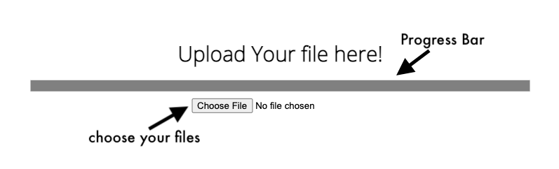
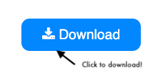

Check it out!
How to Use!
Home
CADMUS
An Innovative Solution To Notes!
How to Use!
For Images:
Take a Picture of your document
Click on the Upload Button
Wait for notes to be transcribed
Download notes from website

For Audio:
Take an audio file of your recording
Click on the Upload Button
Wait for notes to be transcribed
Download notes from website

Use it!
Upload Your Audio here!
Upload Your Image here!
Download
Reload!